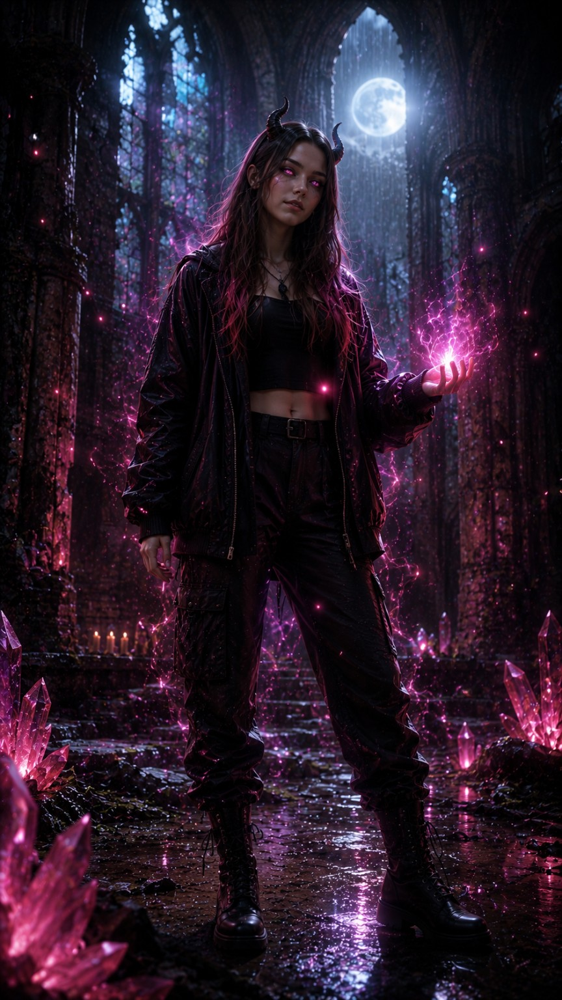
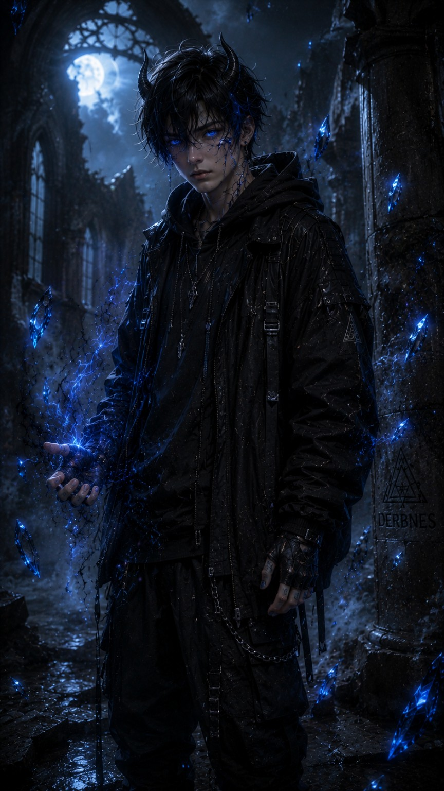

Hope gehörte zu den ersten Schülerinnen, die Derbnes begegneten. Nicht Derbnes schenkte ihr Macht – sie öffnete lediglich den Kern ihrer Seele. Die rosa Magie entstand aus Hopes eigenem innersten Wesen. Mitgefühl, Hoffnung und die Fähigkeit, selbst in dunklen Zeiten Licht in anderen zu sehen, prägen ihren Charakter. Ihre Kraft ist ruhig, lebendig und voller Wärme.

Kael trägt die blaue Magie seines eigenen inneren Kerns. Seine Stärke liegt nicht in Lautstärke oder Wut, sondern in Ruhe, Disziplin und Loyalität. Wo andere aufgeben würden, bleibt Kael stehen. Seine Verbindung zu Hope macht beide stärker und zeigt, dass jede Magie einzigartig ist.